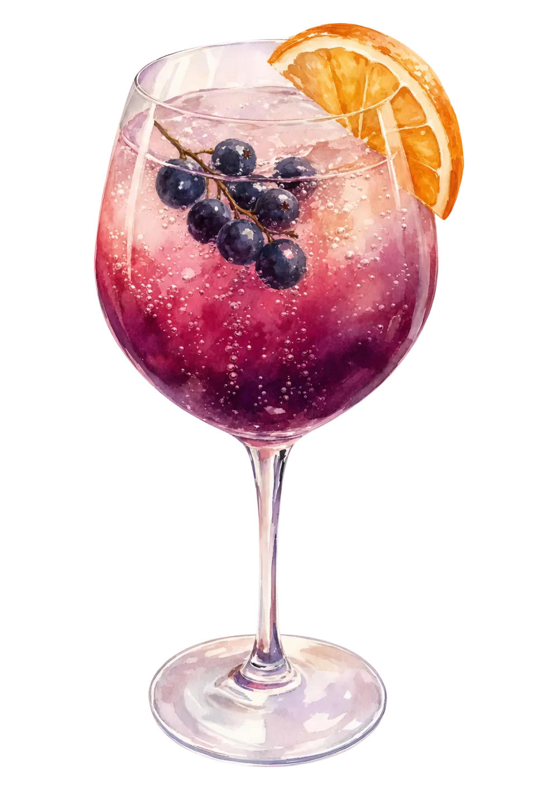
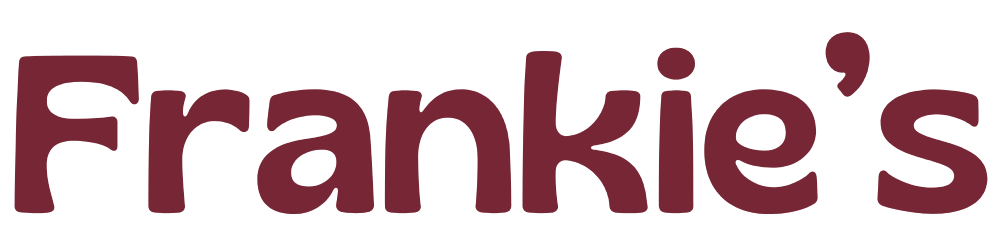

Signatur cocktails
149 kr / Mocktail 99 kr
Alla våra signaturdrinkar finns även alkoholfria.


149 kr / Mocktail 99 kr
Alla våra signaturdrinkar finns även alkoholfria.


Med citron, vitlök och örter.
Med rosmarin och flingsalt.
Friterade getostbollar med chilimarmelad.
Utvalda ostar, charkuterier och tillbehör.
Små briochebröd med hummer, citron och örtmajonnäs.
Miniburgare med cheddar, karamelliserad lök och dressing.
Krispig kyckling med sesammajonnäs.
Smörstekt surdegsbröd med cheddar, mozzarella och rödpesto.
Ett urval av charkuterier, ostar, oliver, marmelad och krispigt bröd. Perfekt att dela över ett glas eller två.
För 2–8 personer
En härlig blandning av krispiga tryffelarancini, capresespett, vispad ricotta, marinerade grönsaker och varm focaccia. Serveras med pesto och het honung.
För 2–8 personer
Good food tastes better together.